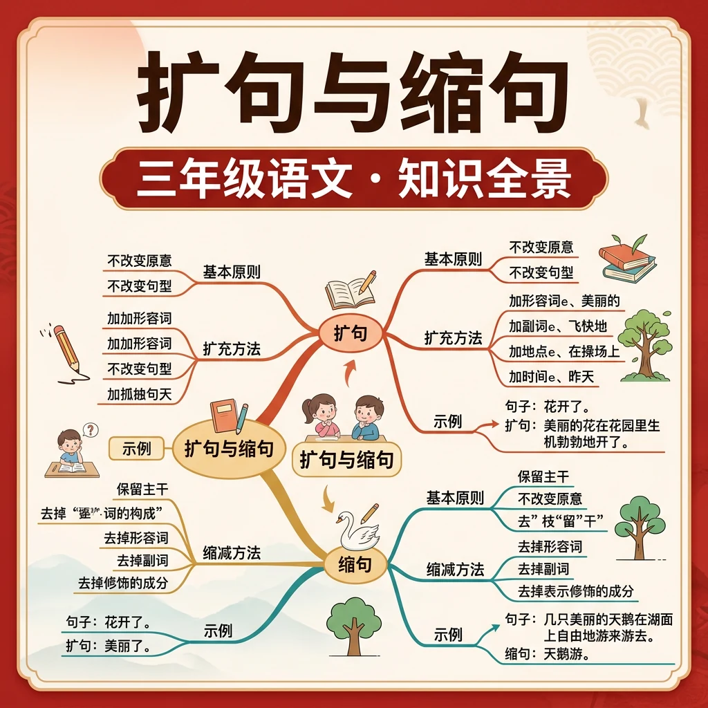
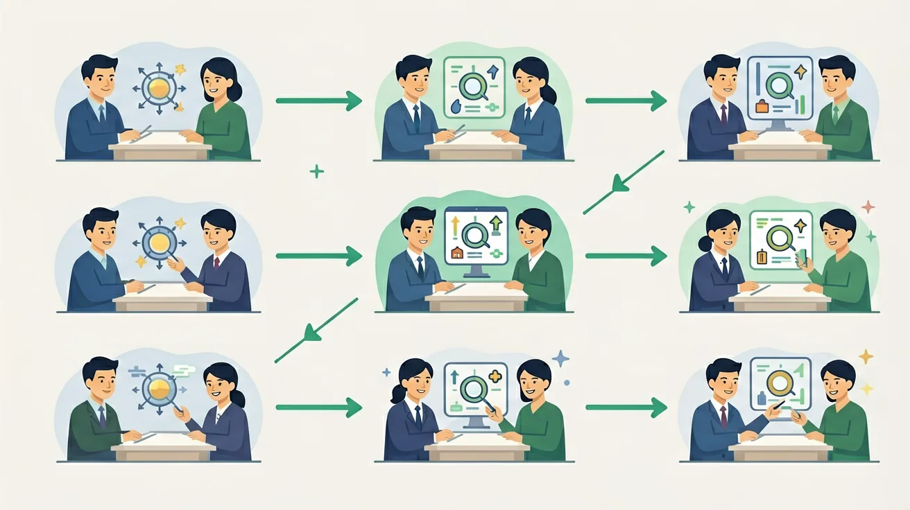

扩句口诀：找到主干，前加什么样，后加怎么样。
小鸟飞 → 美丽的小鸟快乐地飞翔在蓝天上
缩句口诀：抓住"谁/什么"和"做什么/是什么"，其余全删掉！
美丽的花儿开放了 → 花儿开放了
在读长句子时，先缩句找主干，再理解整句意思，效果更好！
写作文时，在普通句子里加上表示颜色、形状、数量的词，让文章更生动！
每天练习3个扩缩句，一个月后你的语感会大大提升！
收集10个你喜欢的形容词和副词，为扩句做准备！
🌍 And（已知）：你已经掌握了一些基础知识
⚡ But（问题）：遇到更复杂的情况还不够用
💡 Therefore（新知）：学习今天的内容，让能力更完整、更系统
和前测对比一下，看看你进步了多少！ 🚀
1. 学完本节课，你对这个语文知识点的掌握程度是？
2. 你能用今天学的知识写一个句子或段落吗？
💡 常见错误往往就在细节中，仔细检查每一步！
和 AI 对话，深化对本节课知识点的理解
💬 参考提示词（复制给 AI 使用）：
✨ 可以用上面的提示词与 AI 展开深度对话，AI 会根据你的回答给出个性化指导。
回忆：今天学了哪些关键词和规则？试着说出来。
用自己的话解释今天学的核心概念，不看书能说清楚吗？
用今天的知识解决一个实际问题，或写一个新例子。
把今天的知识与已有知识联系起来：有什么共同点？有什么区别？能不能自己创造一道新题？
先独立作答，再点选项查看对错与错因。
下列扩句最恰当的是
"激动不已的观众们为精彩表演热烈鼓掌"缩句正确的是
扩写"老师讲故事"时不应
把"小狗跑"扩写成15字左右的句子：____的小狗____地____
答案：毛茸茸的小狗欢快地跑向主人
添加合理定语状语
将"穿着红色连衣裙的小女孩在公园里放风筝"缩句为____放风筝
答案：小女孩
保留主语和核心谓语
关于缩句的正确理解是
对比两组句子表达效果
❓ 为什么扩句后句子变长了，但意思没变？
❓ 扩句时加的词越多越好吗？
❓ 缩句时怎么知道哪些词可以删掉？
学完这一课，这些问题你都能自信地回答。
像搭积木，先找句子主干（谁+干什么），再添加装饰零件
扩句是给句子穿衣服，缩句是脱到只剩内衣
扩句像吹气球会变胖，缩句像放气恢复原样
观察课文范例，发现作家如何用扩句让描写更生动
日记里尝试扩句让故事更精彩，发短信时练习缩句
✅ 保留'的'字前的主语（如'我的书'缩为'我书'错误）
💡 混淆结构助词与修饰成分
✅ 用不同角度补充（颜色+形状+感觉）
💡 缺乏多维度观察
口诀：主干不动枝叶添，缩句要留主谓宾
类比：扩句像给圣诞树挂装饰品，缩句是把装饰品收进盒子
'美丽的蝴蝶飞走了'正确缩句是？
扩句'小猫钓鱼'时不应添加？
And：学生能写出简单句
But：不知道如何让句子更丰富
Therefore：掌握‘加时间、加地点、加动作’的扩句方法
扩句就像给大树添枝叶！比如原句‘小猫钓鱼’，加上时间‘星期天早晨’、地点‘在河边’、动作‘拿着鱼竿’，就变成‘星期天早晨，小猫在河边拿着鱼竿钓鱼’。记住数字3：每次至少加3个要素哦！
🌍 看！你写‘吃苹果’太简单啦。要是写成‘放学后，小红在厨房开心地啃着大苹果’，画面马上活起来了对不对？
哪个扩句最完整？原句：小狗跑
And：学生会用三要素扩句
But：句子还是干巴巴
Therefore：学习用眼睛/耳朵/鼻子让句子变生动
调动五感就像给句子撒调料！比如原句‘下雨了’，加上视觉‘天空黑得像锅底’、听觉‘哗啦啦的响声’、触觉‘冰凉的雨点打在脸上’，立刻大变样。注意：每加1种感官描写，句子就多10分！
🌍 你闻！‘妈妈做饭’变成‘厨房飘来香喷喷的红烧肉味道，滋滋的油爆声听得我流口水’，是不是馋得你想冲进厨房？
哪句用了听觉扩写？原句：风来了
And：学生能用感官描写
But：不会表达情感
Therefore：学会用比喻和夸张传递心情
心情描写是句子的彩虹！比如原句‘我考了100分’，加上比喻‘心里像揣着跳跳糖’、夸张‘开心得快要飞上月球’，感染力立刻翻倍。小秘诀：用1个比喻=+20分，1个夸张=+30分！
🌍 对比看看：‘摔倒了很疼’ vs ‘膝盖火辣辣地疼，眼泪像断了线的珍珠’，第二个是不是让你更想给小朋友吹吹伤口？
哪句用了夸张手法？原句：天很热
